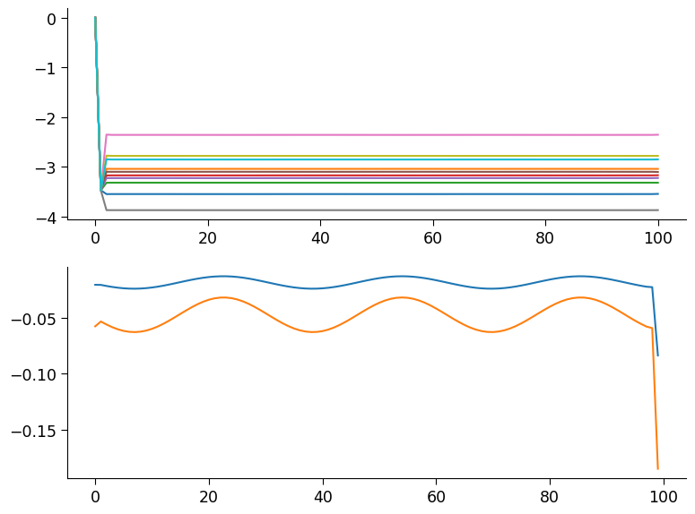
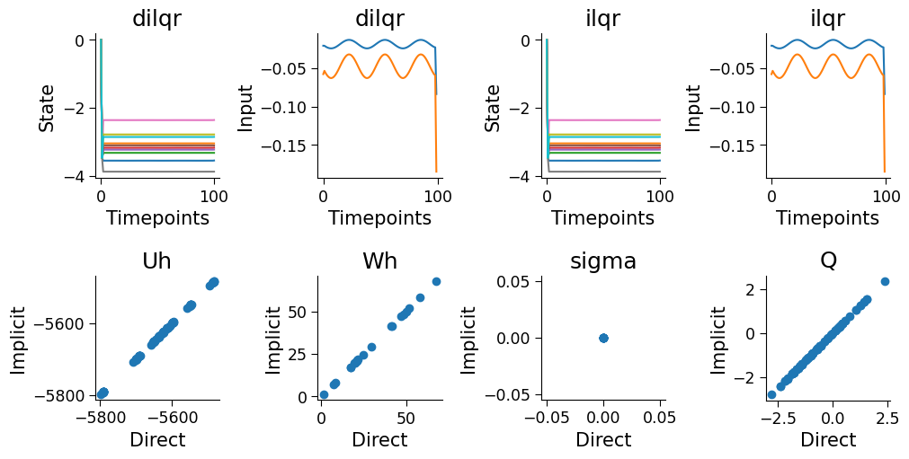

Implicit gradients through iLQR solver#
Imports#
[ ]:
import jax
from jax import Array
import jax.random as jr
import jax.numpy as jnp
from matplotlib import pyplot as plt
from diffilqrax.diff_ilqr import dilqr
from diffilqrax.ilqr import ilqr_solver
from diffilqrax.exact import quad_solve, exact_solve
from diffilqrax.utils import keygen
from diffilqrax.typs import (
iLQRParams,
System,
ModelDims,
Thetax0,
Theta,
)
jax.config.update("jax_default_device", jax.devices("cpu")[0])
jax.config.update("jax_enable_x64", True) # double precision
iLQR Optimisation Problem#
The Iterative Linear Quadratic Regulator (iLQR) is an optimization algorithm used for trajectory optimization in control systems. It iteratively refines a control policy to minimize a cost function over a finite time horizon.
Problem Formulation#
Given a dynamical system described by the state equation:
where \(x_t\) is the state at time \(t\) and \(u_t\) is the control input at time $ t $.
The objective is to find a sequence of control inputs $ {u_0, u_1, \ldots, u_{T-1}} $ that minimizes the cost function:
where $ \ell_{T}(x_T) $ is the terminal cost and $ :nbsphinx-math:`ell`(x_t, u_t) $ is the running cost.
Linear Quadratic Approximation#
iLQR approximates the nonlinear dynamics and cost function using a quadratic expansion around a nominal trajectory $ {x_t^0, u_t^0} $:
Dynamics Linearization:
\[x_{t+1} \approx A_t x_t + B_t u_t + c_t\]where $ A_t = \frac{\partial f}{\partial x} \bigg|{(x_t^0, u_t^0)} $, $ B_t = :nbsphinx-math:`frac{partial f}{partial u}` :nbsphinx-math:`bigg`|{(x_t^0, u_t^0)} $, and $ c_t = f(x_t^0, u_t^0) - A_t x_t^0 - B_t u_t^0 $.
Cost Quadratic Approximation:
\[\begin{split}\ell(x_t, u_t) \approx \frac{1}{2} \begin{bmatrix} x_t \\ u_t \end{bmatrix}^T \begin{bmatrix} Q_t & S_t \\ S_t^T & R_t \end{bmatrix} \begin{bmatrix} x_t \\ u_t \end{bmatrix} + \begin{bmatrix} q_t \\ r_t \end{bmatrix}^T \begin{bmatrix} x_t \\ u_t \end{bmatrix} + l_t\end{split}\]where $ Q_t, S_t, R_t, q_t, r_t, l_t $ are the coefficients of the quadratic expansion.
Backward Pass#
In the backward pass, the value function is approximated by a quadratic function:
The optimal control law is derived as:
where $ K_t $ and $ k_t $ are the feedback and feedforward gains, respectively.
Forward Pass#
In the forward pass, the control inputs are updated using the derived control law, and the state trajectory is propagated using the system dynamics.
Iteration#
The process of linearization, backward pass, and forward pass is repeated until convergence.
This iterative process refines the control policy and trajectory, leading to an optimal solution for the given cost function and system dynamics.
Set-up problem#
Implementation#
The iLQR System contains the dimensionality of the problem in ModelDims, the non-linear dynamics, cost, and terminal cost functions.
[2]:
# Set-up dimensionality
dims = ModelDims(horizon=100, n=10, m=2, dt=0.1)
# Set-up prarameters
key = jr.PRNGKey(seed=0)
key, skeys = keygen(key, 4)
Uh = jax.random.normal(next(skeys), (dims.n, dims.n)) * 0.5 / jnp.sqrt(dims.n)
Wh = jax.random.normal(next(skeys), (dims.n, dims.m)) * 0.5 / jnp.sqrt(dims.n) * dims.dt
L = jax.random.normal(next(skeys), (dims.n, dims.n)) * 0.5 / jnp.sqrt(dims.n)
Q = L @ L.T
# Build system parameters
theta = Theta(Uh=Uh, Wh=Wh, Q=Q, sigma=jnp.zeros(dims.n, dtype=jnp.float64))
params = iLQRParams(x0=jnp.zeros(dims.n, dtype=jnp.float64), theta=theta)
[3]:
# Define iLQR model
def cost(t: int, x: Array, u: Array, theta: Theta):
x_tgt = jnp.sin(t/5)
return (
jnp.sum(
(x.squeeze() - x_tgt.squeeze())
@ theta.Q @
(x.squeeze() - x_tgt.squeeze()).T
)
+ jnp.sum(u**2)
)
def costf(x: Array, theta: Theta):
# return jnp.sum(jnp.abs(x))
return jnp.sum(x**2)
def dynamics(t: int, x: Array, u: Array, theta: Theta):
return (theta.Uh @ jnp.tanh(x)) + theta.Wh @ jnp.tanh(u) + jnp.sum(theta.Uh)*jnp.ones_like(x)
ilqr_model = System(
cost, costf, dynamics, dims
)
# Initialise u sequence
Us_init = 0. * jr.normal(
next(skeys), (dims.horizon, dims.m)
)
Solve iLQR#
Define linesearch hyperparameters
[4]:
ls_kwargs = {
"beta": 0.5,
"max_iter_linesearch": 24,
"tol": 0.01,
"alpha_min": 0.00001,
}
[5]:
opt_traj = dilqr(
ilqr_model,
params,
Us_init,
max_iter=70,
convergence_thresh=1e-9,
alpha_init=1.,
use_linesearch=True,
# verbose=True,
**ls_kwargs
)
[6]:
opt_state, opt_input = opt_traj[:, :dims.n], opt_traj[:-1, dims.n:]
[7]:
fig, axes = plt.subplots(2, 1)
axes[0].plot(opt_state)
axes[1].plot(opt_input)
[7]:
[<matplotlib.lines.Line2D at 0x13fa48250>,
<matplotlib.lines.Line2D at 0x13f5ea390>]

[8]:
(opt_state_ilqr, opt_input_ilqr, opt_costate_ilqr), J0, cost_log = ilqr_solver(
ilqr_model,
params,
Us_init,
max_iter=70,
convergence_thresh=1e-9,
alpha_init=1.,
use_linesearch=True,
# verbose=True,
**ls_kwargs
)
[9]:
fig, axes = plt.subplots(2, 1)
axes[0].plot(opt_state_ilqr)
axes[1].plot(opt_input_ilqr)
[9]:
[<matplotlib.lines.Line2D at 0x13fcbd450>,
<matplotlib.lines.Line2D at 0x13fe08750>]

iLQR Gradient#
TODO: Explain the difference in the two gradients from ilqr solver and dilqr solver
Implicitly differentiate through the iLQR solver using custom jax.jvp function
[10]:
def implicit_loss(theta_params):
theta = Theta(Q=theta_params.theta.Q, Uh=theta_params.theta.Uh, Wh=theta_params.theta.Wh, sigma=jnp.zeros((dims.n), dtype=jnp.float64))
params = iLQRParams(x0=0.*theta_params.x0, theta=theta)
tau_star = dilqr(
ilqr_model,
params,
Us_init,
max_iter=70,
convergence_thresh=1e-9,
alpha_init=1.0,
use_linesearch=True,
**ls_kwargs,
)
opt_xs = tau_star[:, : dims.n]
opt_us = tau_star[:, dims.n :]
return jnp.linalg.norm(opt_xs) ** 2 + jnp.linalg.norm(opt_us) ** 2
[11]:
def direct_loss(prms):
theta = Theta(Uh=prms.theta.Uh, Wh=prms.theta.Wh, Q=prms.theta.Q, sigma=jnp.zeros((dims.n), dtype=jnp.float64))
params = iLQRParams(x0=0.*prms.x0, theta=theta)
(opt_xs, opt_us, _), _, _ = ilqr_solver(
ilqr_model,
params,
Us_init,
max_iter=70,
convergence_thresh=1e-8,
alpha_init=1.0,
use_linesearch=True,
**ls_kwargs,
)
return jnp.linalg.norm(opt_xs) ** 2 + jnp.linalg.norm(opt_us) ** 2
[12]:
implicit_val, implicit_g = jax.value_and_grad(implicit_loss)(params)
direct_val, direct_g = jax.value_and_grad(direct_loss)(params)
[ ]:
fig, axes = plt.subplots(2,len(direct_g.theta), figsize=(10, 5), layout="constrained", gridspec_kw={"hspace":0.1})
for (ax, dg, ig, n) in zip(axes.flatten()[-4:], direct_g.theta, implicit_g.theta, implicit_g.theta._fields):
ax.scatter(dg.flatten(), ig.flatten())
# ax.set(xlabel="Direct", ylabel="Implicit", title=f"{n}", xlim=[jnp.min(dg.flatten()), jnp.max(dg.flatten())], ylim=[jnp.min(dg.flatten()), jnp.max(dg.flatten())])
ax.set(xlabel="Direct", ylabel="Implicit", title=f"{n}", aspect="equal")
for (ax, opt_v, ax_title, y_lab) in zip(axes.flatten()[:4], (opt_state, opt_input, opt_state_ilqr, opt_input_ilqr), ("dilqr", "dilqr", "ilqr", "ilqr"), ("State", "Input", "State", "Input")):
ax.plot(opt_v)
ax.set(xlabel="Timepoints", ylabel=y_lab, title=ax_title)
